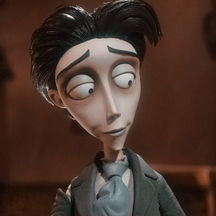
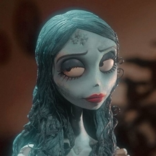

tim burton's corpse bride
directors
year
summary
year
summary
Tim Burton, Mike Johnson
2005
When a shy groom practices his wedding vows in the
inadvertent presence of a deceased young woman, she
rises from the grave assuming he has married her.
2005
When a shy groom practices his wedding vows in the
inadvertent presence of a deceased young woman, she
rises from the grave assuming he has married her.

Victor Van Dort
Victor Van Dort is the main protagonist
of Tim Burton's Corpse Bride.

Emily
Emily is the titular
deuteragonist of Corpse Bride.